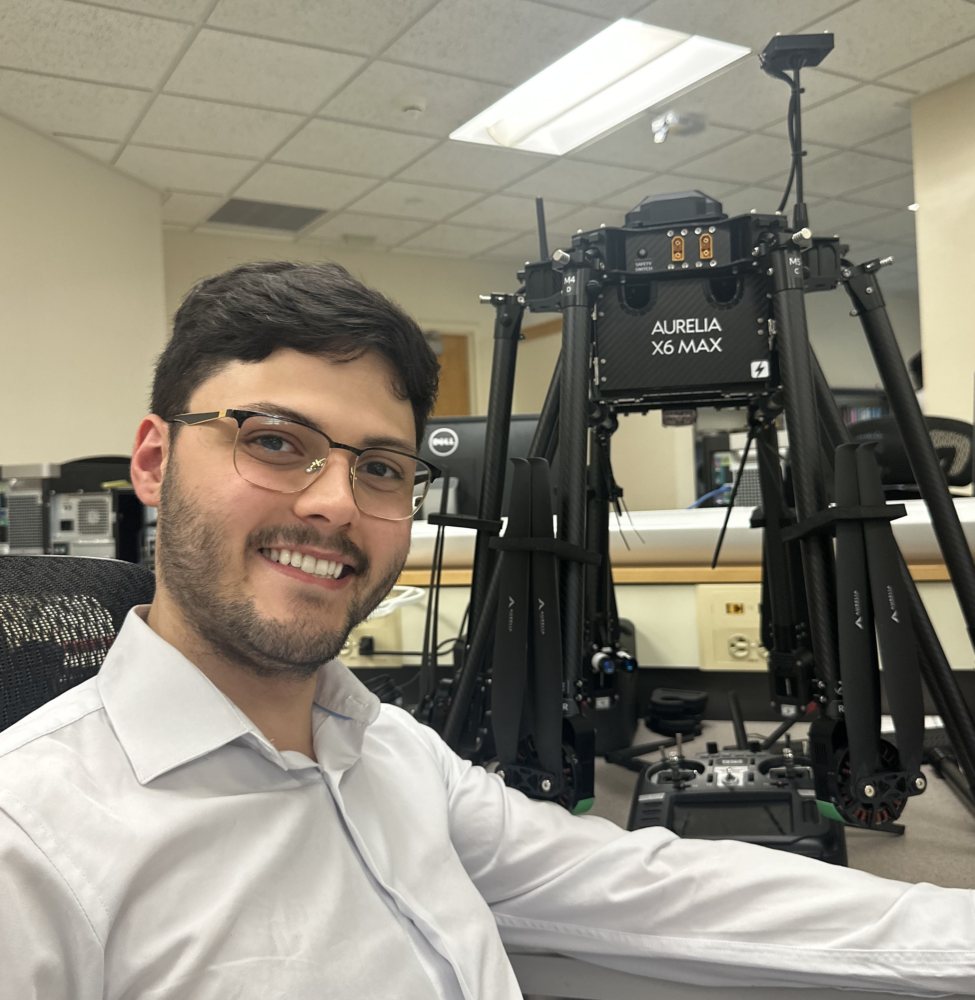
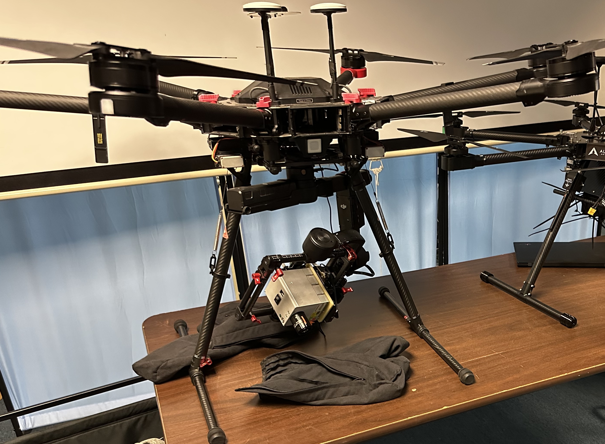
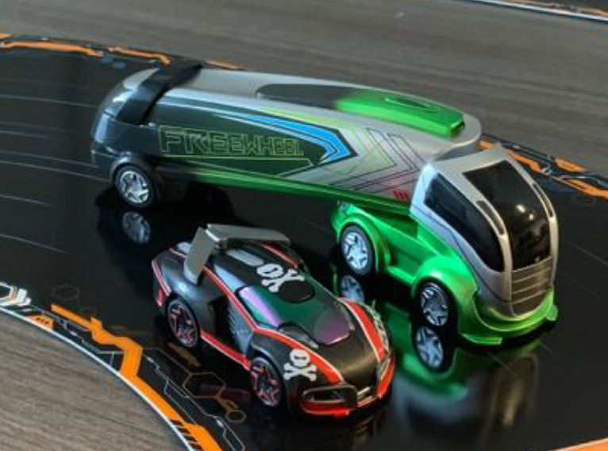

|  |
Gregory Maldonado Gregory Maldonado is a second year MS in computer science student at Binghamton University. He is currently a graduate research assistant under advisement of Dr. Jayson Boubin. Gregory is a software engineer at Lockheed Martin Rotary and Mission Systems supporting IRAD. He was previously contracted to the Air Force Research Laboratory contributing to a ontological modeling-based Java framework and at SRC, Inc. working on fire control radar technology and machine learning for object detection and classification within. |
{kind=link}
ResearchGregory's research interests at Binghamton University include computer networks, cyber-physical systems (CPS) and wireless communication. During undergrad, Gregory was a research assistant for the department of computer science at the State University of New York at Oswego focusing on systems engineering of cyber-physical systems and participated in the development of an autonomous driving simulator. |
|

|
Wireless UAV Swarm Communication
Binghamton University, School of Computing Gregory Maldonado, Jayson Boubin, Ph.D. Abstract / GitLab / Poster A software architecture for facilitating distributed, asynchronous UAV swarm wireless communication over TV whitespace. |
|
|
Evaluating LoRa/LoRaWAN Performance at Binghamton University
Binghamton University, Thomas J. Watson College of Engineering and Applied Sciences Annie Wu, Callisto Hess, Gregory Maldonado GitHub / Paper / Slide Deck Evaluating characteristics of the LoRa physical layer and its ability to communicate to a LoRaWAN ground station. Evaluated characteristics include distance, elevation and path loss affecting reliability and LoRa in motion. The data collected was collected on the Binghamton University campus. |

|
[Automotive] Cyber Physical System Network Protocol (CPSNP)
State University of New York at Oswego Gregory Maldonado, Bastian Tenbergen, Ph.D. GitHub / Poster A network protocol designed for Automotive CPS for multicast communication across a dynamic network. |
|

|
Automotive CPS
State University of New York at Oswego Bastian Tenbergen, Ph.D., Gregory Maldonado GitHub A behavior-centric Cyber Physical Systems Demonstrator using ANKI Overdrive. |
Projects |
|
|
Calibrated Peer Review Tool
State University of New York at Oswego Bastian Tenbergen, Ph.D., Gregory Maldonado, et al. GitHub
A new Learning Management System (LMS) for facilitating calibrated peer reviews
for SUNY Oswego classrooms. |
Education
Binghamton University, School of Computing |
|
Feel free to steal this website's source code. Do not scrape the HTML from this page itself, as it includes analytics tags that you do not want on your own website — use the github code instead. Also, consider using Leonid Keselman's Jekyll fork of this page. |